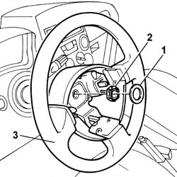

4110A10 steering wheel - r+r for replacement or checks
- Path
- Procedures > 41 STEERING > 4110 STEERING CONTROL AND LINKAGE > 4110A steering control > 4110A10 steering wheel - r+r for replacement or checks
- Kind
- repair procedure (removal / refitting; the operation number is the code)
- Applies to
- all engines; all production periods
- Interactive page
- https://sloeber94.github.io/elrnDB-fPnd/en/#/2752777
Applies to: all engines; all production periods
Applies to: all engines; all production periods
 Removing
Removing
 Refitting
RefittingDisconnect the battery negative terminal.
1. Remove the shield.
2. Unscrew the retaining nut.
3. Remove the steering wheel by releasing from its cables.

Applies to: all engines; all production periods
Refitting
RemovingPosition the wiring in its seat on the steering wheel.
Position the steering wheel on the steering shaft, aligning the reference marks on both parts.
Tighten the nut to torque.
 | Fastening | Component | Ø | Value (daNm) |
|---|---|---|---|---|
- | Nut | STEERING WHEEL | M16 x 1.5 | 5 |
Position the guard on the nut.
Connect the battery terminals.
Check the operation of the Air Bag system using the Examiner or other diagnostic equipment.
Topics linked from this page (1)
Topics that link to this page (28)
- H10 STEERING HARD / (STEERING IN BOTH DIRECTIONS)
- 4110A30 Steering control shaft SUPPORT - R.R.
- 4110A46 INTERMEDIATE SHAFT CONNECTED TO STEERING BOX - R.R.
- 4110D20 steering electrical control device - r r
- 4110D35 Electrically controlled steering CONTROL UNIT/MOTOR - R.R.
- 5010D17 mixed air upper sensor - r r
- 5020A10 heater box - r+r
- 5020A30 heater fan motor - r+r
- 5020A44 heater fan motor resistor - r+r
- 5020A50 heater radiator - r+r
- 5040B64 sensor on evaporator for a/c ecu - r + r
- 5040C10 air conditioner box - r+r
- 5040C26 evaporator unit condensate collection tank - r r
- 5040C30 fan motor - r+r
- 5040C50 air conditioner heater radiator - r+r
- 5040C64 a/c evaporator - r+r
- 5040D14 ecu with automatic air conditioner pushbuttons - r+r
- 5040D75 Air conditioning recirculation flap control MOTOR - R.R.
- 5505A90 rear wiring bundle - r r or replace
- 5505C26 bonnet wiring - r r
- 5505C34 intergrated instrument under facia front air bag wiring - r r
- 5520A10 ignition switch assembly - r+r
- 5550A10 stalk unit assembly - r+r
- 7005A24 front side door r r
- 7040A10 instrument facia trim - r+r
- 7040A26 steering column trim - r+r
- 7040A97 facia trim support beam - r r
- 7040L10 cabin floor carpet - r r